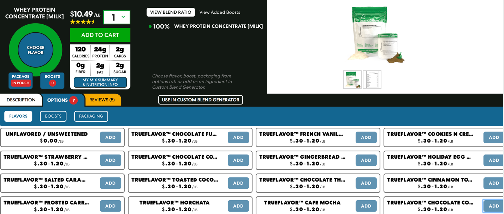
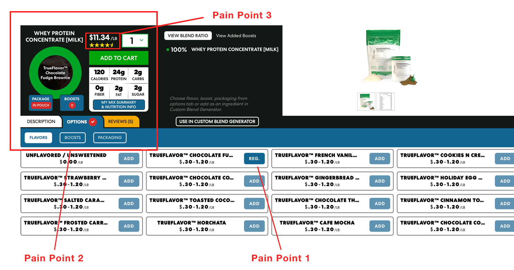

.
TrueNutrition Redesign
CASE STUDY | WINTER 2020
Tools: Sketch, Principle, Sticky Notes
Skills: UX Research, Interaction Design, Prototyping, Visual Design
Problem Space
TrueNutrition is a company that prides itself on the most optimal supplements for all kinds of athletes. In fact, it’s where I get my supplements from. But what makes TrueNutrition special is the ability to customize the flavor and boosts of your supplement. I personally love ordering from TrueNutrition, but find the overall process to navigate to the desired product can be confusing.
As a personal project, I set out to discover if others found any issues with the process and how I could improve it.
Interviews
I visited my local gym to interview 6 users about their experience using supplements as well as conduct guerrilla testing on TrueNutrition’s website. These users were both male and female ages 17-35, with experience ranging from beginner (6mo-1yr) to seasoned (5+ years).
I specifically wanted insight on TrueNutrition’s entire purchasing process to understand what problems users would encounter (if any problems at all). To do so, I created an interview guide to inquire about their general knowledge of fitness supplements and their thoughts/feelings on certain functions during the purchasing process. For the test, users customized the most common fitness supplement: protein powder.
The current TrueNutrition product details page
Affinity Mapping
In order to organize my findings, I conducted an affinity mapping to identify and categorize the users’ usability issues.
Empathy Map
In addition to an affinity mapping, I created an empathy map to understand user needs.
I found that creating an affinity map helped me understand usability issues while creating an empathy map helped me put myself in the shoes of the user. Therefore, using both in conjunction seemed intuitively complementary and extraordinarily useful when it came to identifying pain points.
Pain Points
- Some didn’t know whether they were even changing the flavor.
- Some clicked around the entire page in an attempt to locate what they wanted to find.
- Some felt that the company was untrustworthy because they refrained from displaying the total price of the product.
Users didn’t have any issues finding the product, but problems arose once they clicked on a product of interest. Users felt that there was “too much going on” when it came to color and overall layout. Once they began to customize their product, users were frustrated by the lack of clarity and transparency of the process.
Define
I initially believed that the entire purchasing process, beginning with the landing page, suffered from usability issues. However, none of the 6 users had issues locating the product. It was clear that users struggled to complete actions while customizing their protein. As a result of this finding, I mapped out the interactions of focus.
Problem Statement
Despite their issues, users thoroughly enjoyed the supplement customization process, citing it as an unique experience. One quote that stuck with me was “it’s my protein now!” It helped me understand that customization wasn’t just a process, it was an experience, an experience that suffered from usability issues.
I synthesized my findings, identified my target user, and narrowed my focus to a single problem statement: how might we improve the customization experience of TrueNutrition supplements for a gym-goer?
Competitive Analysis
TrueNutrition allows you to customize a pre-made blend with flavors and boosts for an additional cost. Upon scouring the internet, I only found one other company that provided the same service. Another site tailors the protein powder by asking for the user’s proportions, fitness goals, etc.
Something they both had in common? Their customization process was streamlined step-by-step rather than overloading the user with information on a single page. A step-by-step process makes it feel as if you were building your own personal product, rather than throwing a bunch of random ingredients together.
Sketches
Based on my research, I sketched some possible directions I could take with customization. On the product’s page, users need a clear point of entry to the customization process. Therefore, a complete restructuring of the page was necessary in order to improve clarity.
I explored how the product details would look and how it would transition into a customization state. Based on my research, I found that the importance of product customization is making the experience more personal. Therefore, I needed to explore how to visualize that experience in a coherent manner.
Wireframes
I then created some low fidelity wireframes in Sketch to establish a clearer understanding of how the page would function and how a user could progress through the customization process.
I then had 4 gym-goers progress through the wireframes in a rapid prototyping session to identify any more problems. Problems including:
- Not understanding what a “boost” was and how a boost would look.
- A cramped product page due to the combination of buttons and text.
- Further confusion when selecting flavors -- could you choose multiple flavors or not?
Therefore, I wanted to fix these issues before diving into the final prototype.
Final Product
I finalized the high fidelity prototype in Sketch and animated interactions in Principle. When creating the high fidelity prototype, my primary focuses were
- A streamlined customization experience
- Transparency of price and calculation
- Colors that align more with the TrueNutrition brand
- Easy to view flavor/boosts of the product
- More discoverable descriptions of unfamiliar terms

The customization process from beginning to end.
Closing Thoughts
An experience is more than the sum of its parts. Sitting down and pinpointing each interaction and improving those interactions, well… I feel like that couldn’t have been done without thorough understanding of my user. I came into the project believing that the problem was bigger than it actually was, but time and time again I find myself humbled from talking to other users. Tackling this problem was a blast because I see these users fairly often, but never made conversation with them. To be able to walk through their thoughts on a product important to both of us makes me realize that there’s always more to learn.